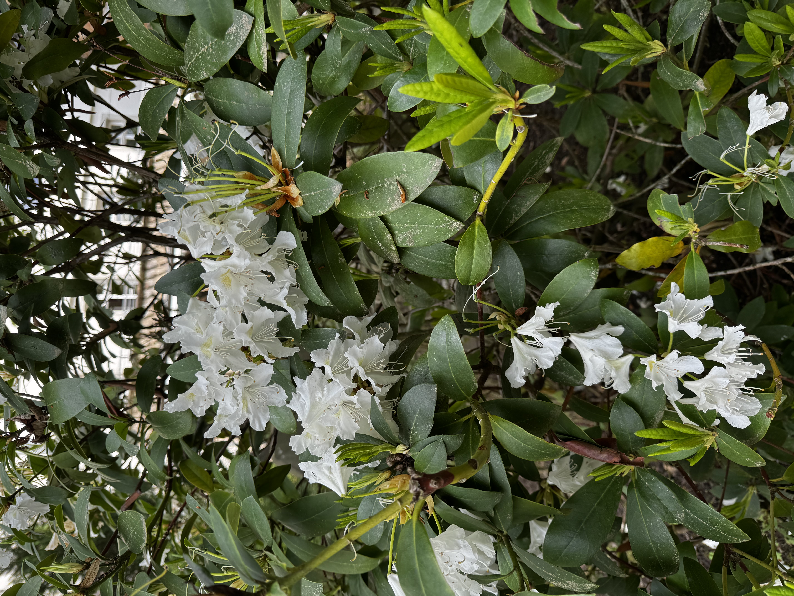

Ein ökologischer Garten fördert die Biodiversität und Lebensräume für Wildtiere und Nützlinge. Die Gestalltung des Gartens wird dabei hauptsächlich von der Natur übernommen. Deswegen werden vor allem heimische Pflanzen verwendet (siehe Pflanzenliste). Bei diesen Gärten geht es nicht um die Schönheit, sondern um ein gutes Ökosystem. Dabei sollte man auf chemikalische Mittel, wie Pestizide oder künstlichen Dünger, verzichten. Diese sind nicht biologisch abbaubar, weil sie nicht von Mikroorganismen zersetzt werden können.
Zudem ist die Pflege auch sehr leicht
